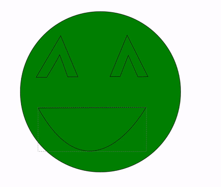

Student Maker Guide
Student Maker Guide
Statement about goal of guidebook.
Easy to Read
This guide is presented as single file, with hyperlinks to bounce you between projects.
Remixable
This book is not finished. Your job is to make this guide work for your Makerspace, by remixing it and adding projects and machines. With just a little bit of HTML know how, you can make this book work for you.
Table of Contents
Vinyl Cutter
The Vinyl Cutter is a machine that cuts either a roll or a piece of vinyl(sticker material) using a very small blade. By moving the blade on the x axis and moving the sheet of vinyl back and forth on the y, it can cut curves and edges perfectly.
In order to cut something on the vinyl cutter you will need to have a vector image. A vector image is a type of image that uses mathematical equations to draw its lines, instead of pixels like a normal image online. When you upload your vector image to the vinyl cutter, it looks at where those lines are and cuts on them.

Once the vinyl cutter has finished cutting your image, you need to weed out the parts you don’t need using tweezers.
Then you use transfer tape to take the remaining vinyl from the backing to whatever surface you’re sticking it on.


The first step in vinyl cutting something is to design something. To get used to using the process, start with one of these design projects. They will help you become used to the vector program Inkscape, and will land you with a sticker by the time you’re done!
Example Project : Emoji Sticker
1. Open Inkscape and click the pink circle tool

2. Click and drag to create a circle. The color doesn’t matter.

3. Next, select the Bezier Curve pen tool. (The blue pen)

4. Draw an eye by clicking and moving, placing anchor points.
4a. Be sure to connect back to your original anchor point to complete the shape!

5. Repeat step four for the second eye.
6. For the mouth, draw a horizontal line across. Then go straight back across the line you just drew to the anchor point and click and hold. Next move your mouse to create the curve of the mouth.

7. Your design is ready! Next find a person who can help you cut out the sticker.
Laser Cutter
The laser cutter is a design tool that uses a high voltage laser beam to cut through all sorts of materials, such as acylic, cardboard, wood, and fabrics. It is very similar to the vinyl cutter in that it uses vector images to cut along lines. T he laser cutter however works in three dimensions, as it can both cut through materials, as well as engrave them.
The first step in laser cutting something is to design something. To get used to using the process, start with one of these design projects. They will help you become used to the vector program Inkscape, and will land you with a laser cut object by the time you’re done!
Example Project : Coasters
1. Open Inkscape and click the pink circle tool

2. Create one circle.
2a. In order to tell the difference between cutting and engraving, the laser cutter needs two different colors. Go back to select the mouse tool at the top of the tool bar.

2b. Then on the right side of the screen, open the styles panel

2c. Go to the fill tab on the new menu you just opened and just click the X.
2d. Then click the Stroke paint tab. These sliders control the Red, Green, and Blue colors on the current object. Slide Red all the way to the right(so the number says 255), and turn Green and Blue all the way to the left(so both say 0)

3. Now you shold have a red ring. Right click on the ring and copy.

4. Paste the Circle Twice.
5. Now you have to design the coasters!
5a. Use the the star tool to create a 5 point star on one
5a -I.Now we don’t want the laser cutter to cut through on this star, just engrave it. Go back the stroke and fill panel and make sure that the fill is not present and turn Red all the way to the left and make Green all the way to the right(255). Now you should have a green star in a red circle.

5b. Next, select the spiral tool and create a spiral within another red ring.

5c. Finally, select the type tool and write your initials on the final empty red ring. If the text is too small, use the select tool.

6.You’ve done the hard part! Now go find someone who can help you properly transfer your file to the laser cutter.
The 3D Printer
The 3D printer is used to print objects using plastic that has been heated to a high temperature.
It then extrudes the plastic in layers less than a millimeter.

Depending on the quality of the object you are printing, the layers will be bigger or smaller, and the print will take longer.

Getting Started
The first thing you should do is go to tinkercad.com and complete their tutorial. Expect about 20 minutes of very easy introduction to 3D modeling and Computer Aided Drafting (CAD) software. This first project will land you with something to print!
Project Ideas:
- Pick a city skyline. Use Tinkercad to create a 3D model of it.
- Pick your favorite thing from a tv show, movie, or book. Ex. A Police Box, a Spaceship, a shield etc. Using Tinkercad’s Explore tab, find a 3D model of it, and modify it to make it a keychain.